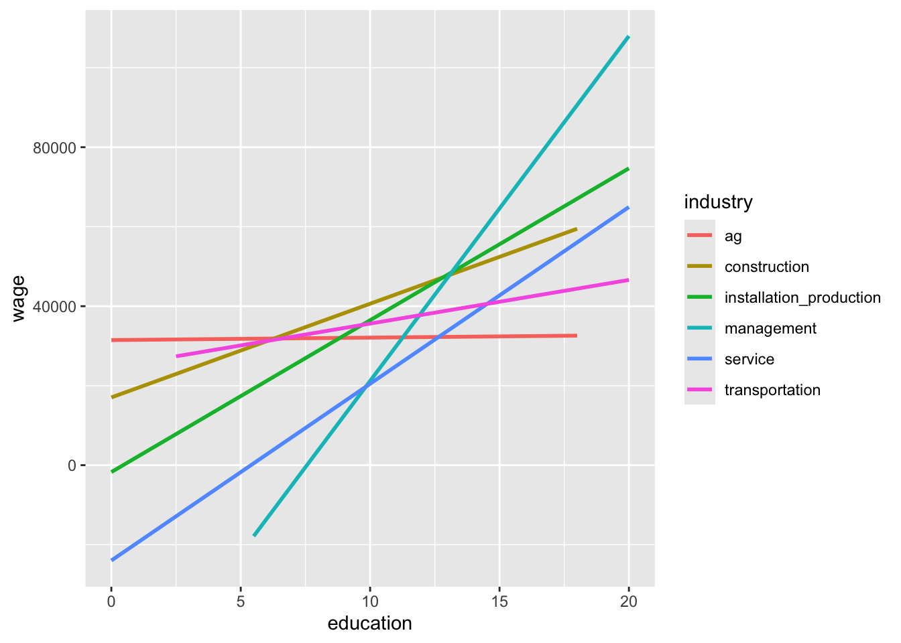

# Load packages and data
library(readr)
library(ggplot2)
library(dplyr)
cps <- read_csv("https://mac-stat.github.io/data/cps_2018.csv")
# Get data on just the management and transportation sectors
cps_sub <- cps %>%
filter(industry %in% c("management", "transportation"))Multiple linear regression: exploring interaction
Notes and in-class exercises
Notes
- You can download a template file to work with here.
- File organization: Save this file in the “Activities” subfolder of your “STAT155” folder.
Learning goals
By the end of this lesson, you should be able to:
- Describe when it would be useful to include an interaction term to a model
- Write a model formula for an interaction model
- Interpret the coefficients in an interaction model in the data context
Readings and videos
Today is a day to discover ideas, so there were no readings or videos to go through before class.
Class exploration
Guiding question: What job sectors have the highest return on education?
We’ll use data from the 2018 Current Population Survey to explore. The codebook for this data is available here. For now we’ll focus on individuals who have jobs in the management or transportation sectors to simplify our explorations.
It would be great to know the true effect of years of education on wages. Let’s start by looking at the relationship between these two variables.
ggplot(cps_sub, aes(x = education, y = wage)) +
geom_point() +
geom_smooth(method = "lm", se = FALSE)`geom_smooth()` using formula = 'y ~ x'There is a positive correlation between years of education and wages, with a fair bit of spread about the line of best fit. We can fit a simple linear regression model to obtain the intercept and slope of that line.
wage_mod_1 <- lm(wage ~ education, data = cps_sub)
coef(summary(wage_mod_1)) Estimate Std. Error t value Pr(>|t|)
(Intercept) -59797.480 6375.9627 -9.378581 1.010664e-20
education 8274.492 410.9261 20.136206 1.379791e-86Note that our intercept estimate is negative which doesn’t make sense! People with 0 years of education still earn wages! Inspecting the plot, we likely could have better accounted for this with a nonlinear transformation of the education variable, but we will leave this issue aside for now.
Let’s focus on this question: does this simple linear regression model help us understand the true effect of years of education?
We’ll want to consider confounding variables in order to better answer that question. One possible confounder is industry. Draw a causal diagram showing how industry, years of education, and wage relate, and explain what unfair comparisons result from using a simple linear regression model.
Let’s adjust for industry by fitting a multiple linear regression model.
wage_mod_2 <- lm(wage ~ education + industry, cps_sub)
coef(summary(wage_mod_2)) Estimate Std. Error t value Pr(>|t|)
(Intercept) -54505.666 7274.6504 -7.492548 8.015884e-14
education 7973.563 456.6417 17.461311 3.244777e-66
industrytransportation -5420.432 3589.2564 -1.510182 1.310637e-01Interpret the education and industrytransportation coefficients in the context of the data. (Remember to include units.) How does the relationship between years of education and wages change after adjusting for industry?
Hold on! We sped ahead too quickly. It’s important to visualize our data thoroughly first. Let’s add industry to our original scatterplot. What do you notice about the lines of best fit for these two industries?
ggplot(cps_sub, aes(x = education, y = wage, color = industry)) +
geom_point() +
geom_smooth(method = "lm", se = FALSE)`geom_smooth()` using formula = 'y ~ x'It would be nice to be able to capture the different trend for the two industries. Let’s see if our original multiple linear regression model (wage_mod_1) was able to do so.
# Visualize the relationships from the fitted model
ggplot(cps_sub, aes(y = wage, x = education, color = industry)) +
geom_line(aes(y = wage_mod_2$fitted.values))What do you notice about what our model produces? Based on your coefficient interpretations from earlier, is this behavior what you would have expected? How do you think our multiple linear regression model is limited? How might we try to fix this?
In our causal diagram, both years of education and industry affect wages, and one way to capture this is with our model in wage_mod_2:
\(E[\text{wage} \mid \text{education}, \text{industry}) = \beta_0 + \beta_1 \text{education} + \beta_2 \text{industrytransportation}\)
Some other ways to capture how wages are affected by years of education and industry could look like this:
- \(\beta_0 + \beta_1 \text{education} + \beta_2 \text{industrytransportation} + \beta_3 \text{education}^2\)
- \(\beta_0 + \beta_1 \text{education} + \beta_2 \text{industrytransportation} + \beta_3 \log(\text{education})\)
- \(\beta_0 + \beta_1 \text{education} + \beta_2 \text{industrytransportation} + \beta_3 \text{education}*\text{industrytransportation}\)
That last type of model is called an interaction model. A general interaction model formula looks like this:
\(E[Y \mid X_1, X_2) = \beta_0 + \beta_1 X_1 + \beta_2 X_2 + \beta_3 X_1*X_2\)
The outcome \(Y\) depends on \(X_1\) and \(X_2\) with the usual multiple linear regression part: \(\beta_1 X_1 + \beta_2 X_2\). But it also includes an interaction term \(\beta_3 X_1*X_2\).
Let’s fit an interaction model for our cps_sub data and explore what relationships our model estimates.
# Fit an interaction model
# NEW SYNTAX: Note the * instead of +
wage_mod_2 <- lm(wage ~ education * industry, cps_sub)
# Visualize the relationships from the interaction model
ggplot(cps_sub, aes(y = wage, x = education, color = industry)) +
geom_line(aes(y = wage_mod_2$fitted.values))How does our new interaction model compare to our previous one?
This is a more complex new model! Let’s explore what is going on mathematically by examining the overall model formula and how we can use it to get model formulas for each industry.
# View coefficient estimates
coef(summary(wage_mod_2)) Estimate Std. Error t value Pr(>|t|)
(Intercept) -65590.606 7611.498 -8.617306 9.218848e-18
education 8678.274 478.344 18.142326 3.646579e-71
industrytransportation 90232.230 20117.859 4.485181 7.457878e-06
education:industrytransportation -7580.228 1568.831 -4.831768 1.396075e-06Model formulas:
E[wage | education, industry] = -65590.606 + 8678.274 education + 90232.230 transportation - 7580.228 education * transportation
Broken down by industry:
Management:
E[wage | education, industry = management] = -65590.606 + 8678.274 education
Transportation:
E[wage | education, industry = transportation] = -65590.606 + 8678.274 education + 90232.230 - 7580.228 education = (-65590.606 + 90232.230) + (8678.274 - 7580.228)education
= 24641.62 + 1098.046education
Question 1: The intercept coefficient, -65590.606, corresponds to what property of the lines?
- management intercept
- transportation intercept
- how the transportation intercept compares to the management intercept
Thus, how can we interpret this coefficient in the context of the wage analysis?
Question 2: The transportation coefficient, 90232.230, corresponds to what property of the lines?
- management intercept
- transportation intercept
- how the transportation intercept compares to the management intercept
Thus, how can we interpret this coefficient in the context of the wage analysis?
Question 3: The education coefficient, 8678.274, corresponds to what property of the lines?
- management slope
- transportation slope
- how the transportation slope compares to the management slope
Thus, how can we interpret this coefficient in the context of the wage analysis?
Question 4: The interaction coefficient, -7580.228, corresponds to what property of the lines?
- management slope
- transportation slope
- how the transportation slope compares to the management slope
Thus, how can we interpret this coefficient in the context of the wage analysis?
Exercises
Exercise 1: Wages across all industries
The plot below illustrates the relationship between wage and education for all of the industries in our cps dataset.
# Plot
ggplot(cps, aes(y = wage, x = education, color = industry)) +
geom_smooth(method = "lm", se = FALSE)What about this plot indicates that it would be a good idea to fit an interaction model?
What industry will R use as the reference category?
(Challenge!) Before fitting the model in R, write down what you think the model formula will look like.
Fit a model that includes an interaction term between
educationandindustry.
# Fit an interaction model called wage_model
# Display summarized model outputIn what industry do wages increase the most per additional year of education? What is this increase?
Similarly, in what industry do wages increase the least per additional year of education? What is this increase?
Exercise 2: Thinking beyond
Do you think there are other variables (which may or may not be in our cps data) that have an interaction with industry in affecting wages? If you were to fit an interaction model, what results might you expect to find?
Reflection
Through the exercises above, we developed ideas about when to fit interaction models and how to interpret results. Describe what makes sense and what is still unclear about this topic.
Response: Put your response here.
Render your work
- Click the “Render” button in the menu bar for this pane (blue arrow pointing right). This will create an HTML file containing all of the directions, code, and responses from this activity. A preview of the HTML will appear in the browser.
- Scroll through and inspect the document to check that your work translated to the HTML format correctly.
- Close the browser tab.
- Go to the “Background Jobs” pane in RStudio and click the Stop button to end the rendering process.
- Navigate to your “Activities” subfolder within your “STAT155” folder and locate the HTML file. You can open it again in your browser to double check.
Solutions
Exercise 1: Wages across all industries
The plot below illustrates the relationship between wage and education for all of the industries in our cps dataset.
# Plot
ggplot(cps, aes(y = wage, x = education, color = industry)) +
geom_smooth(method = "lm", se = FALSE)`geom_smooth()` using formula = 'y ~ x'
The industry-specific lines all have different slopes.
ag (first in alphabetical order)
This is a challenge! Compare your prediction to what you see when fitting the model in part d.
# Fit an interaction model called wage_model
wage_model <- lm(wage ~ education*industry, data = cps)
# Display summarized model output
coef(summary(wage_model)) Estimate Std. Error t value
(Intercept) 31475.87521 22370.504 1.40702574
education 61.95396 2039.257 0.03038065
industryconstruction -14427.01189 25740.953 -0.56046923
industryinstallation_production -33208.72359 25346.017 -1.31021469
industrymanagement -97066.48097 23305.235 -4.16500759
industryservice -55462.76415 23229.134 -2.38763810
industrytransportation -6834.25066 27495.549 -0.24855844
education:industryconstruction 2295.51232 2297.659 0.99906577
education:industryinstallation_production 3759.05906 2244.792 1.67456904
education:industrymanagement 8616.31984 2080.190 4.14208220
education:industryservice 4384.72036 2092.523 2.09542317
education:industrytransportation 1036.09210 2409.093 0.43007562
Pr(>|t|)
(Intercept) 1.594509e-01
education 9.757641e-01
industryconstruction 5.751720e-01
industryinstallation_production 1.901533e-01
industrymanagement 3.139604e-05
industryservice 1.697551e-02
industrytransportation 8.037075e-01
education:industryconstruction 3.177870e-01
education:industryinstallation_production 9.405013e-02
education:industrymanagement 3.470009e-05
education:industryservice 3.615851e-02
education:industrytransportation 6.671499e-01In the management industry, wages increase the most per year of education. The increase is 61.95396 + 8616.31984 = $8678.274 per year. That is, every additional year of education is associated with an average increase of $8678.27 in yearly wages in the management industry.
In the agriculture industry, wages increase the least per year of education. The increase is $61.95 per year. That is, every additional year of education is associated with an average increase of $61.95 in yearly wages in the ag industry.
Exercise 2: Thinking beyond
If a variable x has an interaction with the industry variable in affecting wages, then the relationship between x and wages must be different by industry. We might suspect that this could be the case for hours worked per week. We can make a plot to verify that this is actually the case:
ggplot(cps, aes(y = wage, x = hours, color = industry)) +
geom_smooth(method = "lm", se = FALSE)`geom_smooth()` using formula = 'y ~ x'